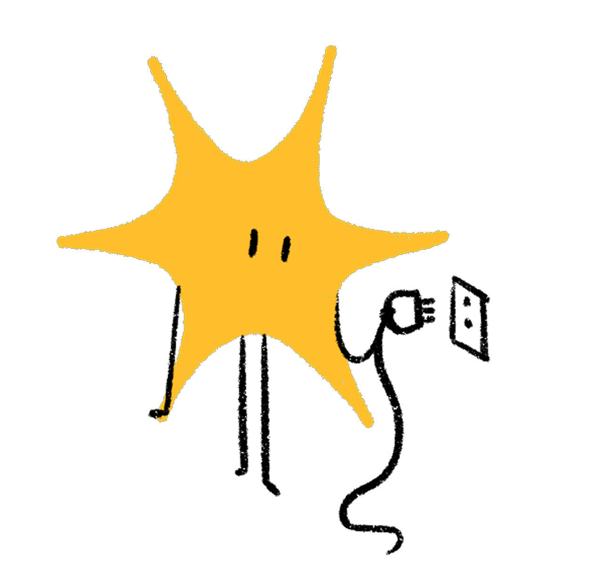
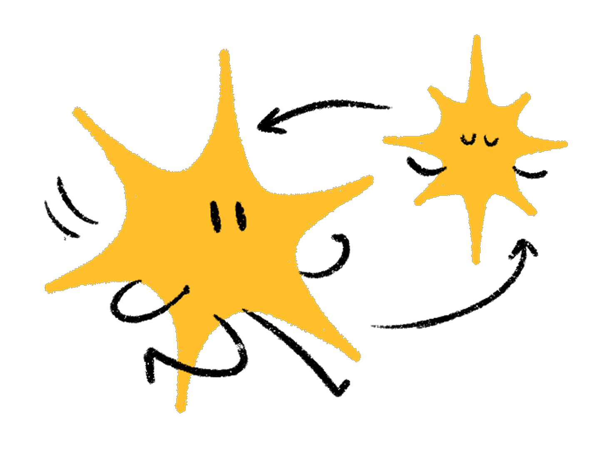
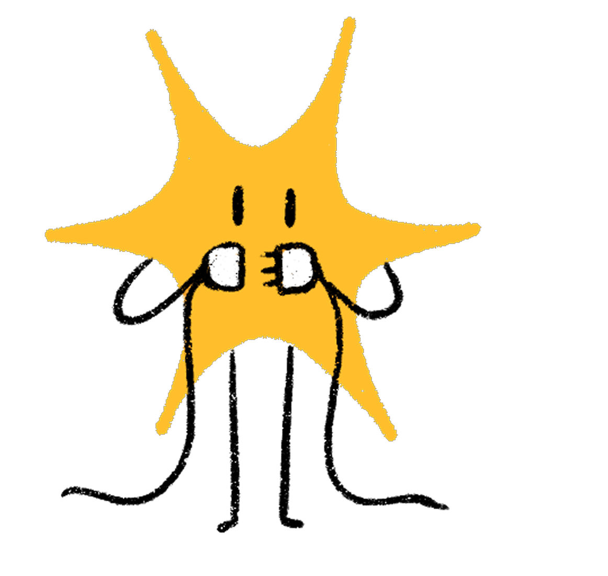
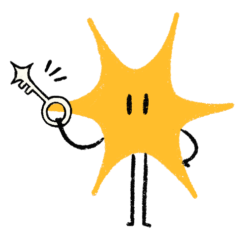
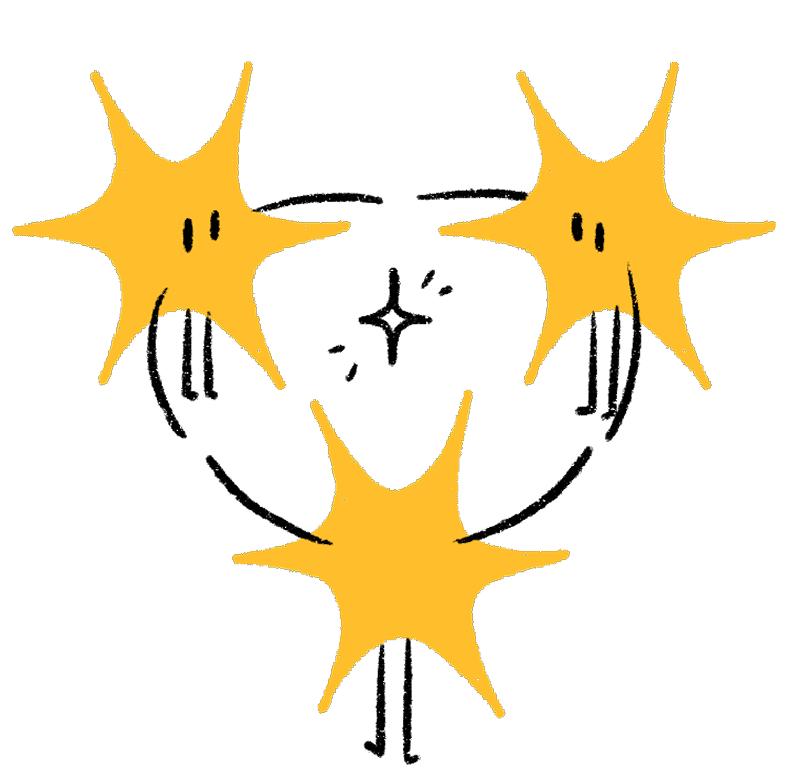
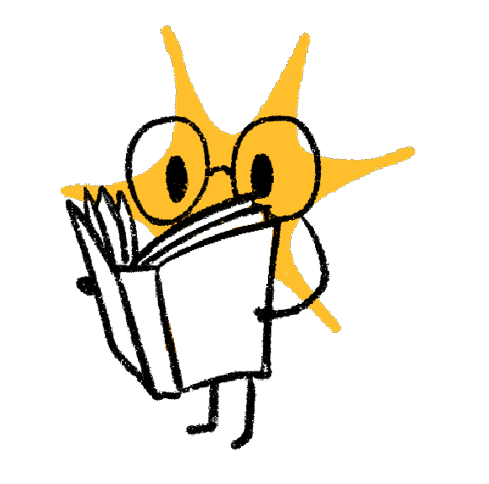

Quando l'AI smette di parlare e inizia ad agire
~55 minuti — il blocco più rilevante per il vostro lavoro

Cosa cambia quando l'AI può agire
Observe → Think → Act → Verifica → Ripeti

Funzioni che l'LLM può decidere di invocare
5 passi, dal prompt alla risposta
{"temp": 22, "condition": "soleggiato"}I tool possono sbagliare — e l'agente deve saperlo gestire

Lo standard che risolve il caos delle integrazioni

Come lo usiamo già e come interessa ai clienti
I rischi specifici degli agenti AI

Troppi tool, troppi obiettivi, troppo contesto — serve dividere il lavoro

Non è magia: è stato persistente

Non tool (azioni), ma conoscenza procedurale (come fare bene)

Come sapere cosa fa un agente in produzione

Da LLM passivo ad agente autonomo, in 7 concetti